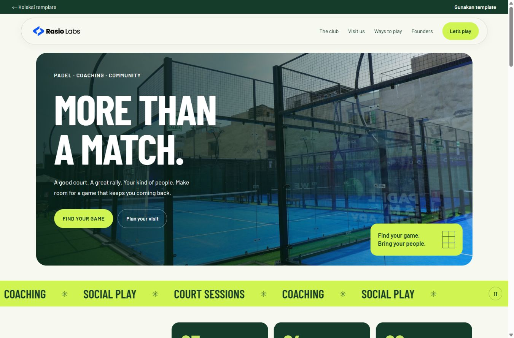

Informasi bisnis dalam satu tempat
Satukan layanan, karya, alamat, dan kontak agar calon pelanggan mudah mempelajari bisnis Anda.
Rasio Profile
Tampilkan profil, layanan, karya, dan kontak dalam website yang disiapkan Rasio dari template pilihan Anda.
Untuk bisnis jasa, perusahaan, dan komunitas yang ingin menjelaskan penawarannya serta menerima pertanyaan pelanggan.
Rp27.750/bulan
Untuk 48 bulan · total Rp1.332.000
Satukan layanan, karya, alamat, dan kontak agar calon pelanggan mudah mempelajari bisnis Anda.
Gunakan foto proyek dan penjelasan layanan untuk membantu calon pelanggan menilai keahlian Anda.
Pengunjung dapat membaca informasi terlebih dahulu, lalu menghubungi Anda melalui WhatsApp atau formulir.
Kirim materi bisnis. Rasio menyesuaikan konten pada struktur template yang Anda pilih.
Kebutuhan teknis dasar website termasuk selama langganan aktif.
Perbarui field konten yang didukung melalui CMS atau ajukan revisi minor tanpa batas jumlah permintaan.
Sediakan cara yang jelas bagi pengunjung untuk bertanya tentang layanan Anda.
Membantu menjawab pertanyaan pengunjung berdasarkan informasi bisnis Anda.
Penerapan disesuaikan dengan kebutuhan; daftar ini bukan daftar template yang tersedia.
Jelaskan layanan, keahlian, dan cara menghubungi.
Tampilkan profil perusahaan dan portofolio proyek.
Perkenalkan program, fasilitas, dan informasi pendaftaran.
Jelaskan kemampuan produksi dan profil perusahaan.
Tampilkan fasilitas, program, lokasi, dan kegiatan.
Susun karya dan penjelasan pendek setiap proyek.
Informasi lapangan, program bermain, klub, dan lokasi tersusun dalam halaman yang dapat dijelajahi.
Tinjau halaman template, lalu tentukan durasi langganan.
Siapkan logo, foto, layanan, dan informasi kontak.
Materi Anda diterapkan pada template yang dipilih.
Periksa konten dan ajukan penyesuaian sebelum digunakan.
Harga per bulan untuk paket 12–48 bulan adalah ekuivalen. Total dibayar di muka untuk durasi yang dipilih.
Rp109.000/bulan
Total Rp109.000
untuk 1 bulan
Domain dibayar terpisah
Rp54.500/bulan
Total Rp654.000
untuk 12 bulan
Domain gratis tahun pertama
Rp32.000/bulan
Total Rp768.000
untuk 24 bulan
Domain gratis tahun pertama
Rp27.750/bulan
Total Rp1.332.000
untuk 48 bulan
Domain gratis tahun pertama
Hosting, SSL, 1 email bisnis, CMS, AI Chatbot, dan revisi minor termasuk sesuai cakupan layanan. Domain gratis tahun pertama untuk paket minimal 12 bulan; perpanjangan domain tahun berikutnya dibayar pelanggan.
Tidak. Anda memilih template dan mengirim materi bisnis. Rasio menyiapkan website berdasarkan template tersebut.
Field konten yang didukung template, seperti teks, foto, dan informasi bisnis. CMS tidak membuka pengeditan bebas terhadap layout atau source code.
Perubahan konten kecil pada struktur yang sudah ada, seperti alamat, nomor WhatsApp, kalimat pendek, atau foto yang Anda sediakan. Jumlah permintaan tidak dibatasi selama langganan aktif.
Domain gratis selama tahun pertama pada paket minimal 12 bulan. Perpanjangan domain tahun berikutnya dibayar pelanggan. Paket 1 bulan tidak mendapat domain gratis.
Langganan memberi hak penggunaan template dan teknologi Rasio selama layanan aktif. Konten serta aset bisnis tetap milik Anda. Rincian hak penggunaan dan ekspor data dijelaskan dalam ketentuan sebelum pemesanan.
Harga perpanjangan, cara berhenti, serta ketentuan pengembalian dana dijelaskan sebelum Anda menyetujui pesanan.